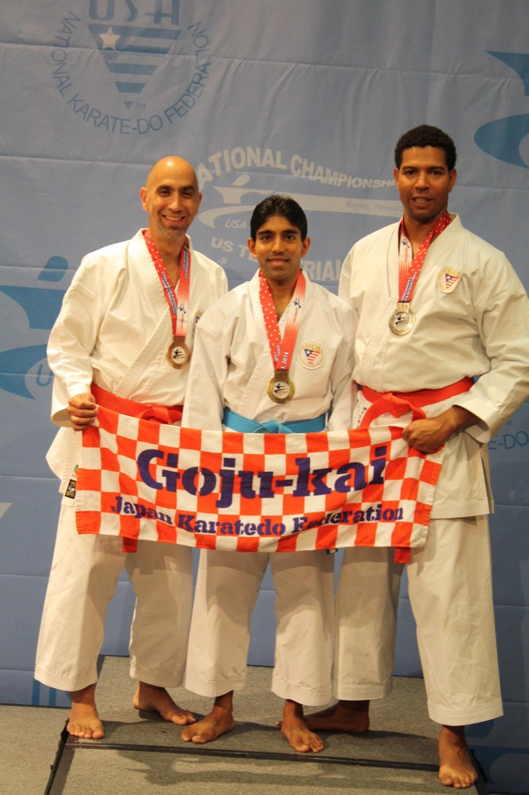

撃砕第一
Gekisai Dai Ichi
Attack & Smash I
Geki "attack," sai "smash," dai ichi "number one."
Our style · 剛柔流
A close-range Okinawan karate that pairs power with flowing movement and deep breathing, practiced the traditional way.
In Japanese, go (剛) means hard and ju (柔) means soft. Goju Ryu trains both: strong, explosive technique driven from the hips, and soft, circular movement that redirects and flows.
Breathing ties it together. In ibuki breathing, you might inhale with every block and exhale with every strike, linking mind and body. Goju Ryu also keeps its roots as a complete fighting art, with grappling, throws and close-range sparring (kumite) built on quick footwork like the cat stance (neko ashi dachi).
The goal isn't fighting for its own sake. It's buji: peace and the absence of conflict, while always looking for a better way.
Hard. External strength, speed and power.
Soft. Internal energy, circles and breath.

Goju Ryu has more Chinese influence than any other Japanese karate style.
Kata are forms: set patterns of movement that hold the techniques and principles of the style. Each name has a meaning.
Geki "attack," sai "smash," dai ichi "number one."
The second Gekisai kata, dai ni "number two."
San "three," chin "battle": mind, body and spirit.
Ten "turning" or "shifting," sho "palm."
Sai "smash" or "break," fa "tear" or "destroy."
Sei "control," yun "pull," chin "battle."
San "three," sei "ten," ru "six."
Shi "four," so "direction," chin "battle."
Se "ten," pai "eight."
Sei "ten," san "three."
Ku "a long time," ru "keep in place," run "suddenly," fa "destroy."
Su "one," pa "hundred," rin "zero," pei "eight."
The dojo is a special place to train, built on respect from the moment class begins with a bow. Here's what to expect.
In the dojo you'll learn basics (kihon), self-defense, how to respect yourself and others, and stamina you might not have thought possible. Defense and fitness are only the beginning of karatedo.